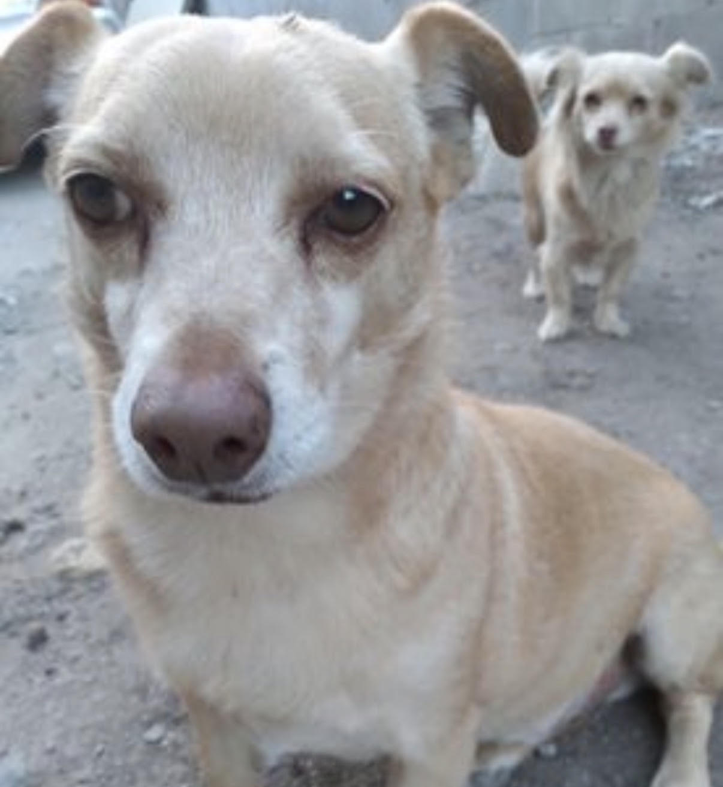
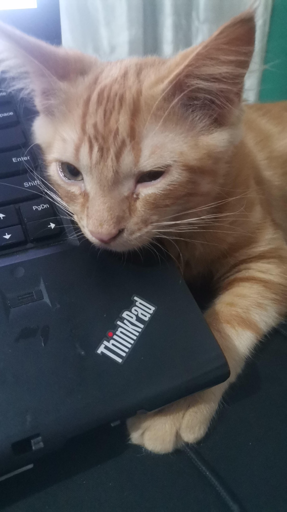
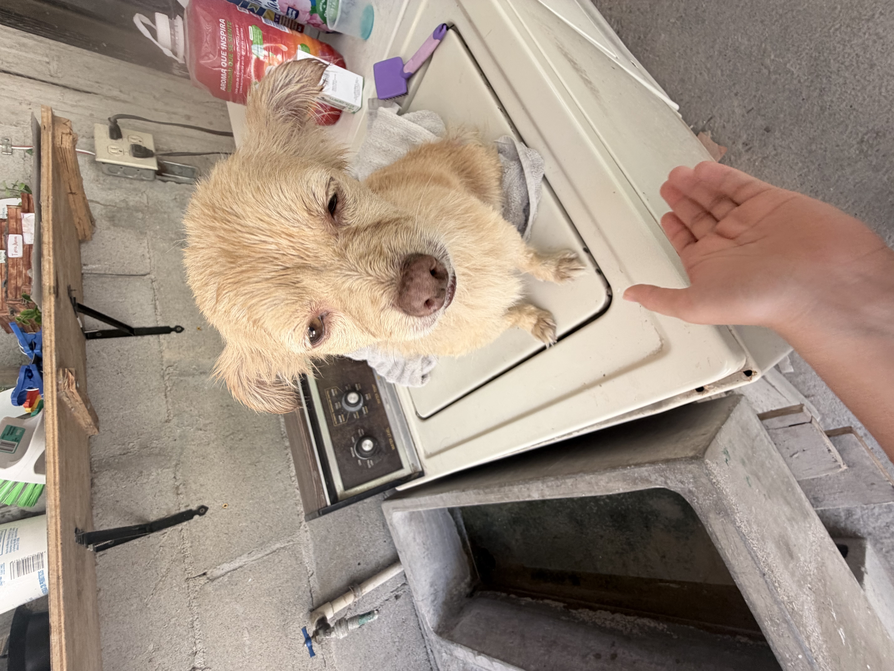

Adopción Responsable
Conoce a los animales que actualmente están buscando un hogar responsable.
Proyecto PAEC
Conoce a los animales que actualmente están buscando un hogar responsable.

Edad: 10 años y medio
Tamaño: Mediano
Personalidad: Juguetón, noble y convive bien con niños y otros animales.

Edad: 8 meses
Tamaño: Pequeño
Personalidad: Independiente y tranquilo.

Edad: 2 años
Tamaño: Mediano
Personalidad: Protectora, activa y muy cariñosa.